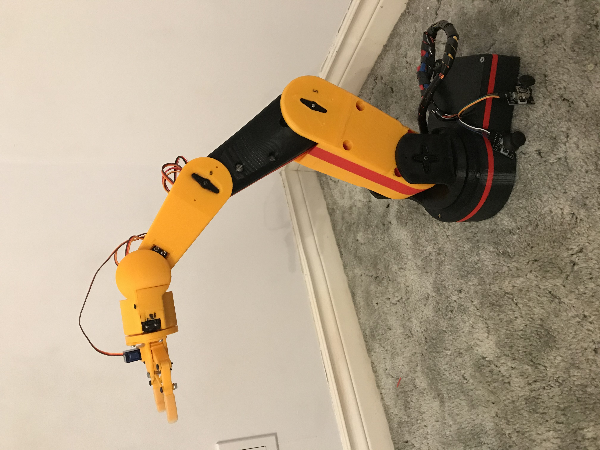
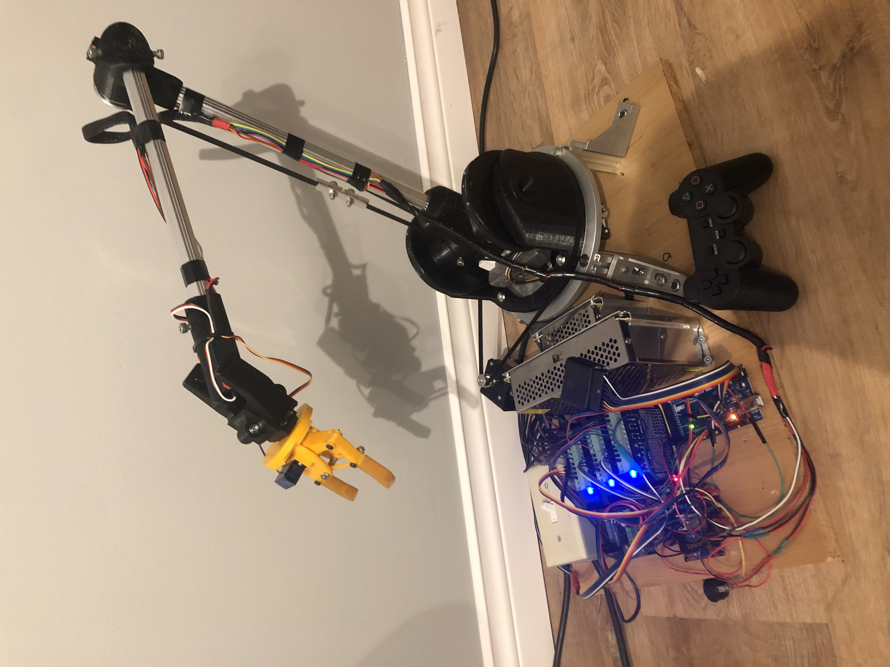
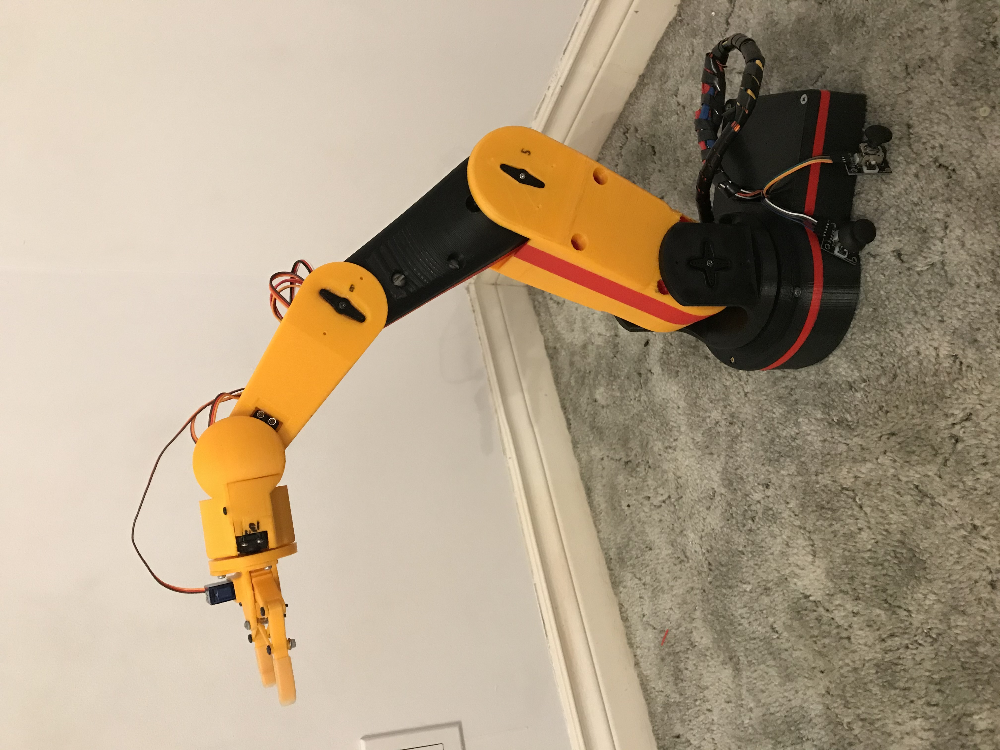
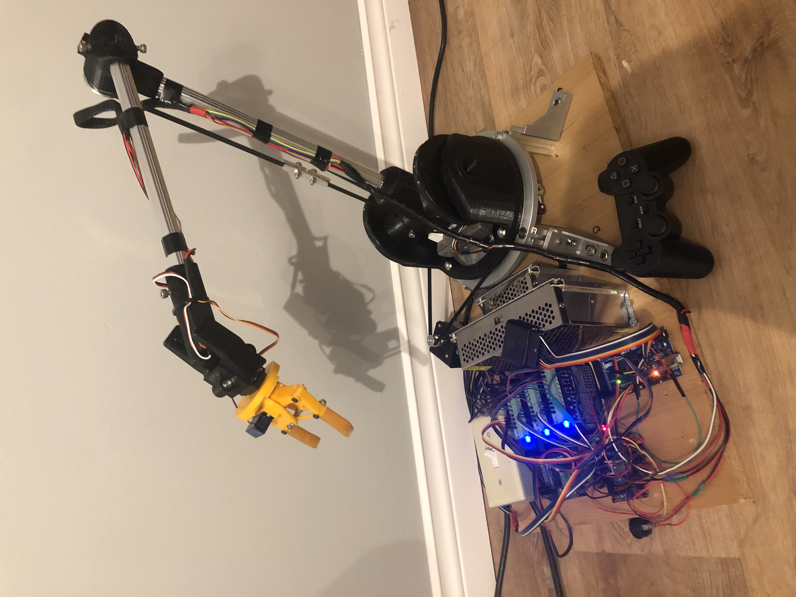

The Robotic Arms project is a testament to my ability to design, prototype, and refine advanced mechatronic systems. Over three iterations, the designs evolved from basic manual control to fully autonomous functionality with impressive performance metrics in the final arm.
 



Progression of the Robotic Arms
- Prototype 1: Focused on learning the basics of robotic arms while keeping the cost low by using cheap servos
- Prototype 2: Introduced higher end components to giv eit more strangth and DOF's
- Final Design: Achieved 6 degrees of freedom, wireless control, and autonomous operation for advanced tasks.
Final Robotic Arm Metrics
- Degrees of Freedom: 6
- Reach: 100 cm
- Payload Capacity: 0.5 kg
- Precision: ±2 mm
- Control System: Bluetooth Controlled via PS2
- Task Capabilities: Robotic programming from controller, Point to Point path planning